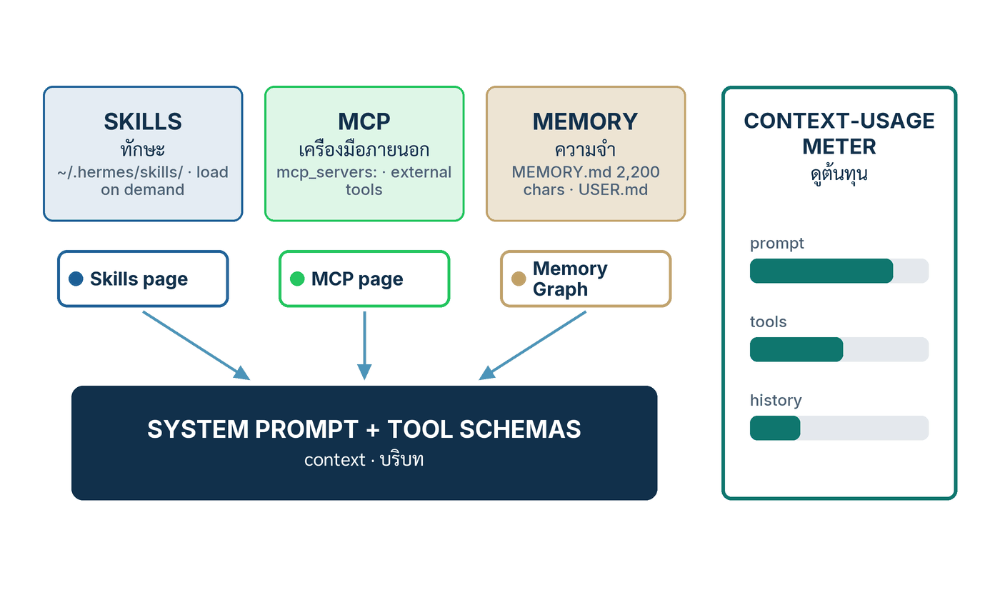

ในบทความนี้
- 1. Three Ways to Make the Agent Know More — Skills, MCP and Memory
- 2. Skills — Install One from the Hub, Write One Yourself
- 3. MCP — Add a Server from the Screen or from config.yaml
- 4. Memory — Read, Edit and Reset MEMORY.md and USER.md
- 5. Which One, When — Five Extension Points Compared
- 6. See What Each One Costs in Context
- 7. สรุป
In this post
- 1. Three Ways to Make the Agent Know More — Skills, MCP and Memory
- 2. Skills — Install One from the Hub, Write One Yourself
- 3. MCP — Add a Server from the Screen or from config.yaml
- 4. Memory — Read, Edit and Reset MEMORY.md and USER.md
- 5. Which One, When — Five Extension Points Compared
- 6. See What Each One Costs in Context
- 7. Summary
🤔 ถ้าเมื่อวานคุณบอก Hermes ว่า "ผมชอบคำตอบสั้น ๆ" แล้ววันนี้มันยังเขียนมาเป็นเรียงความเหมือนเดิม — มันลืม หรือมันไม่เคยจำตั้งแต่แรก?
ตอนที่แล้ว — #4 The Council — ตรวจก่อนส่ง ทุกคำตอบ — เราตั้งสภาให้ตรวจคำตอบก่อนที่มันจะมาถึงเรา นั่นคือเรื่องคุณภาพของสิ่งที่ agent พูด ตอนนี้ถอยมาหนึ่งก้าวเพื่อดูวัตถุดิบของมัน: agent รู้อะไร เอื้อมถึงเครื่องมืออะไร และจำอะไรข้ามวันได้บ้าง เพราะสภาที่เก่งแค่ไหนก็ตรวจได้เฉพาะสิ่งที่ agent มีให้ตรวจ
คำตอบหนึ่งบรรทัด: Hermes มีสามลิ้นชักให้เติมความรู้ — skill คือเอกสารความรู้ที่โหลดเมื่อต้องใช้ MCP server คือเครื่องมือภายนอกที่ประกาศไว้ใน config.yaml และ memory คือไฟล์สองไฟล์ที่มีเพดานตัวอักษร — ทั้งสามเปิดจากหน้าจอ Hermes Desktop ได้ และทุกอย่างที่เติมเข้าไปมีราคาเป็น context ที่อ่านได้จากมิเตอร์ที่แถบล่างของหน้าแชต บทความนี้จะเดินทีละลิ้นชัก: คลิกอะไร พิมพ์อะไร เห็นอะไร แล้วเช็กอะไร
1. Three Ways to Make the Agent Know More — Skills, MCP and Memory
คำตอบตรง ๆ ก่อน: กลไกสามอย่างนี้ต่างกันที่รูปแบบของความรู้และจังหวะที่มันเข้าสู่ context แต่ปลายทางเดียวกันคือ prompt ที่โมเดลเห็นในแต่ละเทิร์น — และทั้งสามเป็นความสามารถของ Hermes Agent ไม่ใช่ของ Desktop โดยเฉพาะ เอกสาร Desktop เขียนไว้ชัดว่าแอปสร้างรอบ agent ตัวเดียวกับ CLI — "same config, same API keys, same sessions, same skills, same memory"[2] สิ่งที่ Desktop เพิ่มให้คือหน้าจอสำหรับแต่ละลิ้นชัก
- Skills — เอกสารทางการนิยามว่าเป็น "on-demand knowledge documents the agent can load when needed" เข้ากันได้กับมาตรฐานเปิด agentskills.io และอยู่ที่
~/.hermes/skills/ซึ่งเป็น "the primary directory and source of truth"[1] agent เห็นแค่ชื่อ คำอธิบาย และหมวดของทุก skill (ราว 3k tokens) แล้วจึงโหลดเนื้อหาเต็มเฉพาะตัวที่ต้องใช้จริง[1] - MCP servers — เครื่องมือภายนอกตาม Model Context Protocol ประกาศไว้ใต้คีย์
mcp_servers:ใน~/.hermes/config.yamlจะเป็น subprocess บนเครื่อง (stdio) หรือ endpoint ระยะไกล (HTTP) ก็ได้ ทุกเครื่องมือที่ค้นพบถูกลงทะเบียนในชื่อmcp_<server_name>_<tool_name>เพื่อไม่ให้ชนกับเครื่องมือในตัว[3] - Memory — ไฟล์สองไฟล์ใน
~/.hermes/memories/:MEMORY.mdโน้ตส่วนตัวของ agent (เพดาน 2,200 ตัวอักษร ≈ 800 tokens) และUSER.mdโปรไฟล์ของเรา (เพดาน 1,375 ตัวอักษร ≈ 500 tokens) ทั้งคู่ถูกฉีดเข้า system prompt เป็น snapshot ที่แช่แข็งไว้ตอนเริ่ม session[6]
{kind=link}

ทฤษฎีเบื้องหลังแต่ละลิ้นชักผมเขียนไว้แล้วในซีรีส์วิเคราะห์ และจะไม่เล่าซ้ำ: วงจรที่ agent เขียน skill ให้ตัวเองและ Curator ที่เก็บกวาด อยู่ใน Hermes #6 Skills ปรัชญาของความจำที่มีเพดานและชั้นค้นหา FTS5 อยู่ใน Hermes #3 Memory และ MCP ทั้งขาเข้า-ขาออก รวมถึง OAuth อยู่ใน Hermes #5 Integrations ตอนนี้เป็นภาคปฏิบัติล้วน ๆ: จะเปิดลิ้นชักไหนต้องคลิกตรงไหน
v2026.8.31 ออก 31 สิงหาคม 2026) ซึ่งเป็นรุ่นที่หน้า MCP ในแอป Desktop ถูกรวมเป็นหน้าเดียว[10] เอกสารหน้า MCP ยังไม่ได้บรรยาย UI ส่วนนี้ ณ วันที่เข้าถึง ป้ายและพฤติกรรมของหน้า MCP ในตอนที่ 3 จึงอ้างจาก release notes เป็นหลัก ส่วน Skills tab, Memory Graph และมิเตอร์ context มาจากเอกสาร Desktop โดยตรง[2]
2. Skills — Install One from the Hub, Write One Yourself
คำตอบตรง ๆ: ใน Desktop แท็บ Skills แสดง skill ที่ติดตั้งแล้วพร้อมสวิตช์ enable/disable และใต้นั้นคือแคตตาล็อก optional skills ที่มากับ Hermes แต่ละรายการมีปุ่ม Install คลิกเดียว[2] ถ้าอยากไปไกลกว่าแคตตาล็อกในตัว — ค้นจาก skills.sh, จาก GitHub หรือจาก URL — ต้องใช้ hub ผ่านคำสั่ง hermes skills ซึ่งพิมพ์ได้จาก terminal ที่ฝังอยู่ในแอป (Ctrl+` เปิดแผง terminal ที่ sidebar ขวา)[2]
ติดตั้งจาก hub
- เปิดแท็บ Skills — เอกสารจัดไว้ในกลุ่ม management panes และ command palette (
Cmd/Ctrl+K) เปิดหน้าใดหรือส่วนการตั้งค่าใดก็ได้จากคีย์บอร์ด สิ่งที่เห็น: รายการ skill ที่ติดตั้งแล้ว แต่ละแถวมีสวิตช์ และแคตตาล็อก optional skills อยู่ด้านล่าง[2] - คลิก Install ที่รายการในแคตตาล็อก สิ่งที่เห็น: เอกสารบอกว่าปุ่มนี้ "flips the row into the installed list once it finishes" — แถวนั้นย้ายขึ้นไปอยู่ในรายการติดตั้งแล้วเมื่อเสร็จ[2]
- สำหรับแหล่งอื่น เปิด terminal ในแอปด้วย
Ctrl+`แล้วสำรวจก่อนติดตั้งเสมอ:hermes skills browse --source officialดูแคตตาล็อกทางการ,hermes skills search kubernetesค้นทุกแหล่ง,hermes skills inspect openai/skills/k8sดูรายละเอียดก่อนติดตั้ง[1] แหล่งที่ hub รองรับตามเอกสารคือofficial,skills-sh,well-known,url,githubและหน้ารวมของชุมชนclawhub,lobehub,browse-sh[1] - ติดตั้ง:
hermes skills install openai/skills/k8s— เอกสารกำกับไว้ว่า "Install with security scan" สิ่งที่เห็น: skill ลงไปอยู่ใน~/.hermes/skills/และhermes skills list --source hubแสดงรายการที่มาจาก hub[1] - กลับมาที่ช่องแชต พิมพ์ชื่อ skill เป็น slash command
/<skill-name>ตามด้วยคำขอ — ทุก skill ที่ติดตั้งจะเป็น slash command โดยอัตโนมัติ และถ้าพิมพ์แค่ชื่อ skill เฉย ๆ agent จะโหลดมันแล้วถามว่าเราต้องการอะไร[1] สิ่งที่เห็น: skill โหลดเข้า context เฉพาะเทิร์นที่เรียก ไม่ใช่ทุกเทิร์น - ดูแลต่อ:
hermes skills checkเช็กว่าต้นทางมีรุ่นใหม่ไหม,hermes skills updateติดตั้งรุ่นใหม่,hermes skills auditสแกนความปลอดภัยซ้ำทั้งหมด[1]
# สำรวจก่อน ติดตั้งทีหลัง — ทุกคำสั่งพิมพ์ใน terminal ของ Desktop ได้
hermes skills browse --source official
hermes skills search kubernetes
hermes skills inspect openai/skills/k8s
hermes skills install openai/skills/k8s
hermes skills list --source hub
hermes skills check
hermes skills update
hermes skills auditเขียนเองหนึ่งตัว
skill คือโฟลเดอร์ที่มี SKILL.md เป็นไฟล์บังคับ ผังตัวอย่างในเอกสารจัดเป็นหมวด เช่น ~/.hermes/skills/devops/deploy-k8s/SKILL.md โดยมี references/, scripts/, templates/, examples/ และ assets/ เป็นโฟลเดอร์เสริมที่ใส่หรือไม่ใส่ก็ได้[1] ส่วนหัวของไฟล์เป็น YAML frontmatter ตามแบบนี้ (ตัดมาจากตัวอย่างในเอกสาร ซึ่งระบุว่า platforms, คีย์เปิดใช้ตามเงื่อนไข และ config เป็นตัวเลือก)[1]:
---
name: my-skill
description: Brief description of what this skill does
version: 1.0.0
platforms: [macos, linux] # ตัวเลือก — จำกัดเฉพาะบางระบบปฏิบัติการ
metadata:
hermes:
tags: [python, automation]
category: devops
requires_toolsets: [terminal] # ตัวเลือก — เปิดใช้เมื่อมี toolset นี้
---
# Skill Title
## When to Use
## Procedure
## Pitfalls
## Verification- สร้างโฟลเดอร์และไฟล์:
mkdir -p ~/.hermes/skills/devops/my-skillแล้วสร้างSKILL.mdในโฟลเดอร์นั้น - วาง frontmatter ด้านบน แก้
nameให้ตรงกับชื่อโฟลเดอร์ และเขียนdescriptionให้บอกว่า "ใช้เมื่อไร" เพราะชื่อกับคำอธิบายคือสิ่งเดียวที่ agent เห็นในรายการ Level 0 ก่อนตัดสินใจโหลด[1] - เขียนเนื้อหาสี่หัวข้อตามแม่แบบของเอกสาร — When to Use (เงื่อนไขที่ควรใช้), Procedure (ขั้นตอน), Pitfalls (จุดพลาดที่รู้แล้วและวิธีแก้), Verification (จะรู้ได้อย่างไรว่าสำเร็จ)[1]
- ยืนยัน: ถ้าแชตเปิดค้างอยู่ พิมพ์
/reload-skillsก่อน — มันสแกน~/.hermes/skills/ใหม่เพื่อหา skill ที่เพิ่งเพิ่มหรือถูกลบ[8] จากนั้นhermes skills listต้องเห็นชื่อใหม่ แท็บ Skills ใน Desktop ต้องแสดงพร้อมสวิตช์ และ/my-skillในแชตต้องโหลดมันได้[1][4]
ก่อนไปต่อ ตัวเลขที่ทำให้เห็นภาพว่าลิ้นชักนี้ใหญ่แค่ไหน — และทั้งสองชุดมาจากเอกสาร ไม่ใช่การนับเอง: Bundled Skills Catalog ไล่ skill ที่ seed เข้าทุก profile ตั้งแต่ติดตั้งไว้ 61 ตัวใน 12 หมวด (apple, devops, research, web …) ส่วน Official Optional Skills Catalog อีก 136 ตัวใน 22 หมวด ที่ ไม่ เปิดใช้โดยปริยาย ต้องสั่ง hermes skills install official/<category>/<skill> เอง[9] สองชุดนี้คือของที่แท็บ Skills แสดงให้เห็นพอดี: รายการที่ติดตั้งแล้วอยู่บน แคตตาล็อกที่รอ Install อยู่ล่าง[2]
skill_manage และคำสั่ง /learn ที่กลั่นไดเรกทอรี, URL หรือบทสนทนาที่เพิ่งคุยกันออกมาเป็น SKILL.md[8] ก่อนปล่อยให้มันเขียนอิสระในเครื่องที่ใช้งานจริง ผมแนะนำเปิด skills.write_approval: true ใน config.yaml เพื่อให้ทุกการเขียนไปเข้าคิวรอตรวจด้วย /skills pending, /skills diff <id>, /skills approve <id>[6] เหตุผลและลำดับการเปิดใช้อยู่ใน Hermes #6 Skills
💡 จากชุมชน — ปิดสิ่งที่ไม่ใช้: ผู้สร้างคอนเทนต์ที่ทำ walkthrough นับ skill ที่เห็นในเครื่องตัวเองได้ไม่เท่ากัน — คลิปหนึ่งบอก "71 skills built into this" อีกคลิปบอก "over 150" — และทุกคนแนะนำเหมือนกันว่าให้ปิด skill ที่ไม่ใช้ (iMessage, Find My, Apple Reminders …)[12][13] ตัวเลขสองชุดนั้นเป็นคำบอกเล่าของผู้ใช้ ไม่ใช่ตัวเลขทางการ และช่วงกว้างของมันอธิบายได้ด้วยแคตตาล็อกสองหน้าข้างบน: 61 ตัวที่ seed มาให้ กับอีก 136 ตัวที่ติดตั้งเพิ่มได้[9] หลักการที่อยู่ใต้คำแนะนำนั้นมีเอกสารรองรับ: รายการ Level 0 ของทุก skill กินราว 3k tokens และ/context allแสดงต้นทุนราย skill ให้ดูได้[1][8] สวิตช์ในแท็บ Skills คือที่ปิด ฝั่ง CLI ใช้hermes skills config("Interactive enable/disable configuration for skills by platform") และถ้าอยากเริ่มจากศูนย์hermes skills opt-outหยุดการ seed ในอนาคตโดยไม่ลบอะไรบนดิสก์[4][1]
3. MCP — Add a Server from the Screen or from config.yaml
คำตอบตรง ๆ: มีสองทางเข้า — หน้า MCP ในแอป (ตั้งแต่ v0.21.0 server ที่ตั้งไว้กับแคตตาล็อกอยู่หน้าเดียวกัน) หรือเขียนคีย์ mcp_servers: ใน config.yaml ด้วยมือ[10][3] ทั้งสองทางลงเอยที่เดียวกัน: Hermes ค้นพบเครื่องมือของ server ตอนเชื่อมต่อ แล้วลงทะเบียนเป็น mcp_<server_name>_<tool_name> พร้อม toolset ชื่อ mcp-<server> ให้จัดการเป็นกลุ่มได้[3]
จากหน้าจอ — หน้า MCP (v0.21.0)
release notes ของ v0.21.0 บรรยายหน้านี้ไว้ในย่อหน้าเดียว ผมแยกออกมาเป็นรายการเพื่อให้รู้ว่าจะมองหาอะไร: "MCP servers and the catalog merged into one coherent desktop page" พร้อม drag-in "paste anything" import, background health checks ที่เตือนให้ re-auth ก่อนที่ tool call จะล้ม, overlay ต้นทุน/การใช้งานที่แสดง "schema token estimates and 30-day usage per server" และ hermes:// deep links ที่ติดตั้ง MCP server "with explicit confirmation"[10] เอกสาร Desktop นับ "MCP servers" เป็นหนึ่งใน settings panes และ command palette (Cmd/Ctrl+K) เปิดหน้าใดหรือส่วนการตั้งค่าใดก็ได้จากคีย์บอร์ด[2]
- เปิดหน้า MCP:
Cmd/Ctrl+Kแล้วพิมพ์ MCP หรือเข้าจาก Settings สิ่งที่เห็น: server ที่ตั้งไว้แล้วกับแคตตาล็อกในหน้าเดียว[10] แคตตาล็อกนี้คือชุดที่ทีม Nous ตรวจแล้ว merge เข้ามา (เก็บในoptional-mcps/ของ repo ไม่มีช่องทางส่งจากชุมชน) และเอกสารระบุชัดว่า ปิดไว้โดยปริยาย — ติดตั้งเฉพาะที่จะใช้จริง ฝั่ง CLI คือhermes mcp catalogและhermes mcp install <name>[3] - เพิ่ม server ด้วยวิธีใดวิธีหนึ่ง — เลือกจากแคตตาล็อก วาง config ที่ก๊อปมาจากเอกสารของ server ลงไป (นี่คือ "paste anything" import) หรือคลิกลิงก์
hermes://จากหน้าเว็บของผู้ให้บริการ ซึ่งแอปจะถามยืนยันก่อนเสมอ — อ่านให้ครบว่ามันจะรันคำสั่งอะไรก่อนกดตกลง[10] - รอผล health check เบื้องหลัง: ถ้า server ต้อง re-auth หน้านี้จะเตือนก่อนที่ tool call จะล้ม[10] สิ่งที่ควรเช็กพร้อมกัน: ตัวเลข schema token estimate ของ server นั้นใน overlay — นี่คือราคาที่ทุกเทิร์นจะจ่าย (ตอนที่ 6)
- กลับไปที่แชต แล้วสั่งงานที่ server ทำได้ สิ่งที่เห็น: ใน tool activity ชื่อเครื่องมือขึ้นต้นด้วย
mcp_ตามด้วยชื่อ server — เอกสารบอกว่าปกติเราไม่ต้องเรียกชื่อเต็มเอง Hermes เห็นเครื่องมือและเลือกใช้ระหว่างคิดเอง[3]
จาก YAML — mcp_servers: ใน config.yaml
- เปิด
~/.hermes/config.yamlแล้วเพิ่มบล็อกmcp_servers:ตัวอย่างแรกคือ stdio server ที่เอกสารใช้ใน Quick start — filesystem server ที่รันผ่านnpxและเปิดให้เข้าถึงไดเรกทอรีเดียว (เปลี่ยน/home/user/projectsเป็นโฟลเดอร์ของคุณ)[3] - หรือ server ระยะไกลแบบ HTTP ที่มี header ยืนยันตัวตน — ตัวอย่างขั้นต่ำจากเอกสารเช่นกัน[3] ใส่ค่าลับผ่านตัวแปรสภาพแวดล้อมแทนการเขียนตรง ๆ ในไฟล์ถ้าทำได้
- ทดสอบก่อนใช้:
hermes mcp test filesystem("Test connection to an MCP server") และhermes mcp listดูรายการที่ตั้งไว้[4] ถ้าไม่เชื่อมต่อ เอกสารให้เช็กnode --versionและnpx --versionก่อน[3] - ถ้าแชตเปิดค้างอยู่ พิมพ์
/reload-mcp— โหลด server จาก config ใหม่และ re-probe เครื่องมือ เพราะชุดเครื่องมือของ session ถูกตรึงไว้ จะรับของใหม่ก็ต่อเมื่อ/reload-mcp,/newหรือเกิด context compaction[3] - เรียกใช้: พิมพ์ prompt ตัวอย่างจากเอกสาร "List the files in /home/user/projects and summarize the repo structure." สิ่งที่เห็น: agent เรียก
mcp_filesystem_read_fileหรือเครื่องมือญาติของมัน ตามตารางชื่อในเอกสาร[3] - ปิดชั่วคราวโดยไม่ลบ:
enabled: falseในบล็อกของ server นั้น — เอกสารระบุว่านี่คือสาเหตุหนึ่งที่ "tools not appearing"[3]
# ~/.hermes/config.yaml — stdio server (ตัวอย่าง Quick start ของเอกสาร)
mcp_servers:
filesystem:
command: "npx"
args: ["-y", "@modelcontextprotocol/server-filesystem", "/home/user/projects"]# ~/.hermes/config.yaml — HTTP server ระยะไกล (ตัวอย่างขั้นต่ำของเอกสาร)
mcp_servers:
company_api:
url: "https://mcp.internal.example.com"
headers:
Authorization: "Bearer ***"# ทดสอบ ดูรายการ แล้วโหลดใหม่ในแชต
hermes mcp list
hermes mcp test filesystem
/reload-mcpปุ่มที่มักถูกลืมคือปุ่มกลาง: ไม่ต้องปิดทั้ง server ก็ลดราคาได้ เอกสารให้กรองรายเครื่องมือด้วย tools.include (ลงทะเบียนเฉพาะที่ระบุ) หรือ tools.exclude (ลงทะเบียนทุกตัวยกเว้นที่ระบุ) ใส่ glob ได้ และถ้าเขียนทั้งสองคีย์ include ชนะ[3] นี่คือทางออกของ server ที่ generate เครื่องมือจาก OpenAPI เป็นพัน ๆ ตัว — เอกสารยกตัวอย่าง cloudflare ที่มีราว 3,300 endpoint tools และใช้ block-list แทน checklist[3] ฝั่ง CLI hermes mcp configure <name> เปิด checklist เดิมกลับมาให้ติ๊กใหม่ โดยติ๊กค้างไว้ตามที่เลือกครั้งก่อน[3][4]
# ~/.hermes/config.yaml — ลงทะเบียนเฉพาะเครื่องมือที่ใช้จริง (ตัวอย่าง whitelist ของเอกสาร)
mcp_servers:
github:
command: "npx"
args: ["-y", "@modelcontextprotocol/server-github"]
env:
GITHUB_PERSONAL_ACCESS_TOKEN: "***"
tools:
include: [create_issue, list_issues]PATH, HOME, USER, LANG, LC_ALL, TERM, SHELL, TMPDIR บวกตัวแปร XDG_* — ตัวแปรอื่นทั้งหมด (API key, token) ถูกตัดทิ้ง จะส่งอะไรให้ server ต้องเขียนไว้ใน env: ของบล็อกนั้นเท่านั้น[5] ขาออก ข้อความ error จากเครื่องมือ MCP ถูกกรองก่อนถึงโมเดล: GitHub PAT (ghp_…), คีย์แบบ sk-…, Bearer token และพารามิเตอร์ token=, key=, API_KEY=, password=, secret= ถูกแทนด้วย [REDACTED][5] และแคตตาล็อกก็ไม่ใช่เกราะสมบูรณ์ — v0.21.0 ถอดทั้งรายการใน catalog และ skill ของ Blender MCP ออก "after an upstream compromise"[10] อ่านก่อนติดตั้งเสมอ ภาพรวมของ threat model อยู่ใน Hermes #4 Security
💡 MCP ไปอีกทางได้ด้วย: hermes mcp serve ทำให้ Hermes เองกลายเป็น MCP server ให้ agent ตัวอื่นต่อเข้ามา[4] ผมเล่าเรื่อง "MCP both ways" ไว้ใน Hermes #5 Integrations — ในตอนนี้เรายังอยู่ที่ขาเข้าเท่านั้น
4. Memory — Read, Edit and Reset MEMORY.md and USER.md
คำตอบตรง ๆ: ความจำถาวรของ Hermes คือไฟล์ Markdown สองไฟล์ที่มีเพดาน — MEMORY.md 2,200 ตัวอักษร และ USER.md 1,375 ตัวอักษร ใน ~/.hermes/memories/ — และเมื่อเต็ม เครื่องมือ memory จะคืน error ไม่ใช่ทิ้งรายการเก่าเงียบ ๆ[6] ใน Desktop เราอ่านและแก้มันจาก Memory Graph (เอกสารเรียกทั้ง Memory Graph และ Star Map) ส่วนสวิตช์ระดับโปรไฟล์อยู่ในหน้า Settings → Memory & Context ซึ่งเอกสารระบุชื่อไว้แต่ไม่ได้ไล่รายละเอียดแต่ละปุ่ม[2]
อ่าน
สิ่งที่ agent เห็นทุกเทิร์นคือบล็อกแบบนี้ใน system prompt — มีหัวบอกว่าเป็น store ไหน ใช้ไปกี่เปอร์เซ็นต์ และรายการคั่นด้วยเครื่องหมาย § (ตัดมาจากตัวอย่างในเอกสาร)[6]:
MEMORY (your personal notes) [67% — 1,474/2,200 chars]
User's project is a Rust web service at ~/code/myapi using Axum + SQLx
§
This machine runs Ubuntu 22.04, has Docker and Podman installed
§
User prefers concise responses, dislikes verbose explanationsกฎข้อเดียวที่ต้องจำเมื่ออ่าน: บล็อกนี้เป็น frozen snapshot — ถ่ายครั้งเดียวตอนเริ่ม session และไม่เปลี่ยนกลาง session เพื่อรักษา prefix cache ของโมเดล ถ้า agent บันทึกความจำระหว่างคุย ไฟล์บนดิสก์เปลี่ยนทันที แต่ prompt จะเห็นของใหม่ใน session ถัดไป[6] นี่คือคำตอบของคำถามในย่อหน้าแรกของบทความ: มันจำแล้ว แต่ session เดิมยังอ่านของเก่าอยู่ — เปิด session ใหม่แล้วดู
แก้และล้าง
- เปิด Memory Graph: command palette → Memory Graph, คลิกรายการในแถบสถานะ หรือพิมพ์
/journeyในแชต (alias/learning,/memory-graph) สิ่งที่เห็น: กราฟโหนดของ skill และความจำที่ซูมได้ มีไทม์ไลน์ กรองได้ All / Used / Learned[2] - คลิกโหนดแล้วแก้หรือลบได้จากแผงนั้นโดยตรง — เอกสารระบุผลต่างกันตามชนิด: "skills are archived, memories removed" คือ skill ถูกเก็บเข้าคลัง (กู้คืนได้) ส่วนก้อนความจำถูกลบจริง[2]
- ทำจาก CLI ก็ได้ผลเดียวกัน:
hermes journey listแสดง id ของโหนด (ก้อนความจำใช้รูปแบบmemory:<source>:<index>),hermes journey edit <node>เปิดเนื้อหาใน$EDITOR,hermes journey delete <node> [-y]ลบโดยไม่ถามซ้ำถ้าใส่-y[6] - อยากให้การบันทึกทุกครั้งผ่านมือคนก่อน: ตั้ง
memory.write_approval: true— ใน CLI การเขียนเบื้องหน้าจะถามทันที ส่วนช่องทางอื่นและการทบทวนเบื้องหลังจะเข้าคิว ตรวจด้วย/memory pending,/memory approve <id>,/memory reject <id>หรือเปิด-ปิดสดด้วย/memory approval on[6] - ล้าง: ถ้าต้องการปิดทั้งระบบ ตั้ง
memory_enabled: falseและuser_profile_enabled: falseทั้งคู่ — เอกสารระบุว่าเมื่อปิดทั้งสอง เครื่องมือmemoryจะหายจาก schema และ prompt จะไม่พูดถึงเครื่องมือที่ใช้ไม่ได้[6] ถ้าแค่อยากเริ่มจำใหม่จากศูนย์ วิธีที่ผมใช้คือลบโหนดทั้งหมดผ่าน journey หรือย้ายสองไฟล์ในmemories/ออกไปเก็บไว้ที่อื่น แล้วเปิด session ใหม่ — เอกสารไม่ได้ให้คำสั่ง "reset memory" แยกไว้ต่างหาก
# ~/.hermes/config.yaml — ค่าเริ่มต้นตามเอกสาร
memory:
memory_enabled: true
user_profile_enabled: true
memory_char_limit: 2200 # ≈ 800 tokens
user_char_limit: 1375 # ≈ 500 tokens
write_approval: false # true = ต้องอนุมัติก่อนบันทึกทุกครั้ง
display:
memory_notifications: on # off | on | verboseถ้าสองไฟล์นี้ไม่พอ Hermes มีชั้น external memory provider เป็น plugin ที่เลือกได้ทีละหนึ่ง โดยความจำในตัวยังทำงานคู่กันเสมอ — เอกสารหน้า providers เปิดด้วยตัวเลข 8 ตัว (Honcho, OpenViking, Mem0, Hindsight, Holographic, RetainDB, ByteRover, Supermemory) แต่ตารางเปรียบเทียบท้ายหน้ามี Memori เป็นแถวที่เก้า[7] เปิดใช้ด้วย hermes memory setup ดูสถานะด้วย hermes memory status ปิดด้วย hermes memory off หรือตั้ง memory.provider: ใน config.yaml หรือเลือกจาก hermes plugins → Provider Plugins → Memory Provider[7][4] ผมยังยืนตามคำแนะนำใน Hermes #3 Memory: รีดประโยชน์จากสองไฟล์กับ session search ให้สุดก่อน ค่อยเพิ่ม provider เมื่อเจอปัญหาที่สองชั้นนั้นตอบไม่ได้จริง ๆ
💡 เพดานคือฟีเจอร์: เอกสารแนะนำให้เริ่มรวบรายการเมื่อความจำเกิน 80% ของความจุ ซึ่งดูได้จากหัวบล็อกใน prompt[6] เวลาเห็นตัวเลขนั้นใน Memory Graph ผมถือเป็นสัญญาณให้เปิดดูรายการทีละก้อน — ไม่ใช่สัญญาณให้ขยายเพดาน เหตุผลที่ตัวเลขนี้เล็กโดยตั้งใจอยู่ใน Hermes #3 Memory
5. Which One, When — Five Extension Points Compared
คำตอบตรง ๆ: ข้อเท็จจริงที่ต้องอยู่ใน context ตลอดเวลา → memory · ขั้นตอนที่ยาวและใช้เป็นครั้งคราว → skill · ความสามารถในการลงมือทำกับระบบภายนอก → MCP server · หน้าจอหรือแผงใหม่ในแอป → Desktop plugin ซึ่งเป็นคนละระบบกับสามอย่างแรกโดยสิ้นเชิง ตารางนี้วางทั้งห้าช่องทางเทียบกันตามที่อยู่บนดิสก์ หน้าจอใน Desktop คำสั่ง CLI และราคาที่จ่ายเป็น context
| Extension | Lives at | Desktop surface | CLI | Context cost |
|---|---|---|---|---|
| Skill | ~/.hermes/skills/<category>/<name>/SKILL.md[1] |
แท็บ Skills (สวิตช์ + แคตตาล็อก Install) เปิดด้วย Cmd/Ctrl+K[2] |
hermes skills …, /<skill-name>, /learn[1] |
รายชื่อของทุก skill ราว 3k tokens ทุกเทิร์น เนื้อหาเต็มเฉพาะเมื่อโหลด[1] |
| MCP server | mcp_servers: ใน ~/.hermes/config.yaml[3] |
หน้า MCP — servers + catalog + overlay ต้นทุน (v0.21.0)[10] | hermes mcp add|test|list, /reload-mcp[4] |
schema ของเครื่องมือทุกเทิร์น — หน้า MCP แสดง schema token estimate ต่อ server[10] |
| MEMORY.md | ~/.hermes/memories/MEMORY.md[6] |
Memory Graph; Settings → Memory & Context[2] | hermes journey list|edit|delete, /memory[6] |
≤ 2,200 ตัวอักษร ≈ 800 tokens ทุกเทิร์น[6] |
| USER.md | ~/.hermes/memories/USER.md[6] |
เหมือน MEMORY.md[2] | เหมือน MEMORY.md[6] | ≤ 1,375 ตัวอักษร ≈ 500 tokens ทุกเทิร์น[6] |
| Desktop plugin | $HERMES_HOME/desktop-plugins/<id>/plugin.js[11] |
Settings → Plugins; Cmd/Ctrl+K → Reload desktop plugins[11] |
— (ไฟล์ ESM ไฟล์เดียว โหลดใหม่เองเมื่อบันทึก)[11] | ไม่ใช่หมวดใดใน Context Usage — เอกสารอธิบายว่าเป็น ESM ที่รันใน renderer realm ของแอป[11][2] |
แถวสุดท้ายคือแถวที่คนสับสนบ่อยที่สุด Desktop plugin ไม่ได้ทำให้ agent รู้อะไรเพิ่ม — มันเพิ่ม pane, หน้า, รายการในแถบสถานะ หรือคำสั่งใน palette ให้กับแอป เป็นไฟล์ ESM ไฟล์เดียวที่แอปโหลดภายในไม่กี่วินาทีและ hot-reload ทุกครั้งที่บันทึก จัดการได้ใน Settings → Plugins[2][11] ส่วน "Agent plugins" ในหน้าเดียวกันคือ plugin ฝั่ง backend อีกระบบหนึ่ง[2] ถ้าจะลองเขียน plugin ให้แอป ผมเขียนตัวอย่างและข้อจำกัดไว้ใน Hermes #10 Desktop & Fleet
integrity แค่พิสูจน์ว่าไบต์ตรงกับ hash ไม่ได้ sandbox อะไร[11]
6. See What Each One Costs in Context
คำตอบตรง ๆ: มิเตอร์ Context usage ที่แถบสถานะด้านล่างของหน้าแชตแสดง "% full" ของ context window แบบสด และเมื่อคลิกจะเปิด popover Context Usage ที่แยก token ตามหมวด — system prompt, tool definitions, skills, memory, rules, MCP, subagent definitions และตัวบทสนทนาเอง — เอกสารบอกจุดประสงค์ไว้ว่า "so you can see exactly what's eating the window before compression kicks in"[2] สามหมวดในนั้นคือสามลิ้นชักของบทความนี้พอดี
- มองที่แถบสถานะ: มิเตอร์ context อยู่ตรงนั้น ถ้าไม่เห็น คลิกขวาที่แถบแล้วเลือก Show in status bar → context meter (แถบทั้งแถบซ่อน/แสดงด้วย
Cmd/Ctrl+Shift+S)[2] - คลิกมิเตอร์ สิ่งที่เห็น: popover แยกหมวด อ่านสามแถว — skills (ฝั่ง CLI เรียกว่า skills index), memory (สองไฟล์) และ MCP (schema ของเครื่องมือทุก server ที่เปิดอยู่)[2][8] ถ้าแถว MCP ใหญ่ผิดคาด ให้ไปข้อถัดไป
- เปิดหน้า MCP: overlay ต้นทุน/การใช้งานแสดง schema token estimate และการใช้งาน 30 วันย้อนหลังต่อ server — server ที่ schema ใหญ่แต่ 30 วันไม่มีใครเรียก คือตัวที่ผมจะจัดการก่อน — ลองตัดเครื่องมือที่ไม่ใช้ออกด้วย
hermes mcp configure <name>หรือtools.includeก่อน แล้วค่อยตั้งenabled: falseถ้ายังไม่ได้ใช้จริง ๆ[10][3] - ฝั่ง CLI/TUI ใช้
/context(alias/ctx) — แสดงตารางประมาณการรายหมวดชุดเดียวกัน และ/context allเพิ่มรายละเอียดราย skill และราย toolset ส่วน/usageแสดง token, ประมาณการค่าใช้จ่าย และ — ถ้าผู้ให้บริการรองรับ — โควตาที่เหลือของบัญชี[8]
# ในแชต (CLI/TUI) — ตัวเลขชุดเดียวกับ popover ใน Desktop
/context # หมวด: system prompt, tool definitions, rules, skills index, MCP, subagents, memory, conversation
/context all # เพิ่มต้นทุนราย skill / ราย toolset
/usage # token, ประมาณการค่าใช้จ่าย, โควตาบัญชี (ถ้ามี)
/new # เริ่ม session ใหม่เมื่อมิเตอร์เต็ม (alias /reset)💡 จากชุมชน — หนึ่ง session ต่อหนึ่งหัวข้อ: ผู้ใช้หนัก ๆ ที่ทำ walkthrough แนะนำตรงกันว่าให้แยก session ตามหัวข้อ ปักหมุดและจัดโฟลเดอร์ แล้วกด /new เมื่อมิเตอร์ที่แถบล่างเต็ม เพราะทุกข้อความส่งทั้งเธรดกลับไปที่โมเดลอีกครั้ง — ค่าใช้จ่ายจึงโตตามความยาวของบทสนทนา ไม่ใช่ตามจำนวนคำถาม[12] เอกสารยืนยันครึ่งหนึ่งของเรื่องนี้ไว้ในตารางเทียบ memory กับ session search: ความจำถาวรมี "Token cost: Fixed per session (~1,300 tokens)" ส่วนบทสนทนาคือส่วนที่โต[6]
ลำดับที่ผมใช้ลดตัวเลขในมิเตอร์ ไล่จากถูกสุด: ปิดสวิตช์ skill ที่ไม่ใช้ในแท็บ Skills → ตัดเครื่องมือ MCP ที่ไม่ใช้ด้วย tools.include แล้วจึงตั้ง enabled: false ให้ server ที่นาน ๆ ใช้ที ตามด้วย /reload-mcp → ปล่อยให้ memory เต็มแล้วรวบ ไม่ใช่ขยายเพดาน → และเมื่อทั้งหมดยังไม่พอ /new ตอนถัดไป #6 Automation & Agents จะได้ใช้ตัวเลขชุดนี้อีกครั้ง เพราะ cron job และ subagent แต่ละตัวก็มี context ของตัวเองที่ต้องจ่าย
7. สรุป
ในบทความนี้เราเปิดสามลิ้นชักของ Hermes Desktop ทีละลิ้นชัก: ติดตั้ง skill จากแคตตาล็อกและจาก hub แล้วเขียนเองหนึ่งตัวจาก frontmatter ไม่กี่บรรทัด, เพิ่ม MCP server ทั้งจากหน้า MCP ที่ v0.21.0 รวมไว้หน้าเดียวและจากบล็อก mcp_servers: ที่ยกมาจากเอกสารทั้งบรรทัด, อ่าน-แก้-ล้าง MEMORY.md กับ USER.md จาก Memory Graph และจาก hermes journey แล้วปิดท้ายด้วยมิเตอร์ที่บอกว่าแต่ละลิ้นชักกิน context เท่าไร สิ่งที่อยากให้ติดตัวไปคือประโยคเดียว: ทุกอย่างที่ agent รู้เพิ่ม มีราคาเป็น token ทุกเทิร์น — ลิ้นชักที่ดีจึงไม่ใช่ลิ้นชักที่ใส่ได้เยอะที่สุด แต่คือลิ้นชักที่รู้ว่าอะไรควรอยู่ในนั้น
ตอนถัดไป #6 Automation & Agents — งานที่รันเองและตรวจเอง จะเอาทั้งสามลิ้นชักไปใช้กับงานที่ไม่มีเรานั่งอยู่หน้าจอ: cron job ที่ตั้งแต่ v0.21.0 "load and update persistent memory like every other agent" และ subagent ที่ส่งคำสั่งแทรกได้ระหว่างทาง[10]
🎯 สิ่งสำคัญที่ต้องจำ
- Three drawers = skill (ความรู้โหลดเมื่อต้องใช้ ที่
~/.hermes/skills/), MCP server (เครื่องมือภายนอกใต้mcp_servers:) และ memory (สองไฟล์ที่มีเพดานใน~/.hermes/memories/) — ทั้งหมดเป็นของ Hermes Agent, Desktop เพิ่มหน้าจอให้ - Skills tab = สวิตช์ enable/disable ต่อ skill + แคตตาล็อก Install คลิกเดียว ส่วน hub (
hermes skills browse|search|inspect|install) เปิดแหล่ง official, skills-sh, well-known, github และ URL - SKILL.md = YAML frontmatter (
name,description,version,metadata.hermes) + สี่หัวข้อ When to Use / Procedure / Pitfalls / Verification — เขียนเองได้ในโฟลเดอร์เดียว - MCP page (v0.21.0) = servers + catalog หน้าเดียว, paste-anything import, health check, overlay schema-token และ 30-day usage,
hermes://ที่ถามยืนยันก่อนเสมอ — ฝั่ง YAML ใช้hermes mcp testแล้ว/reload-mcp - Env filtering = stdio MCP server ได้แค่
PATH HOME USER LANG LC_ALL TERM SHELL TMPDIR XDG_*+ สิ่งที่เขียนในenv:และ error ถูกกรองค่าลับก่อนถึงโมเดล - Memory Graph = ที่อ่าน แก้ และลบโหนดความจำใน Desktop (
/journey); CLI คือhermes journey list|edit|delete; snapshot แช่แข็งจึงเห็นของใหม่ใน session ถัดไป - Context meter = คลิกที่แถบสถานะเพื่อดู skills / memory / MCP แยกหมวด;
/context allราย skill; ปิดสิ่งที่ไม่ใช้ก่อน แล้วค่อย/new
อ้างอิง
ทุกแหล่งอ้างอิงตรวจสอบและเข้าถึงเมื่อ 7 กันยายน 2569 (2026-09-07) ซีรีส์นี้ใช้ป้ายกำกับหลักฐานสี่แบบ — Docs เอกสารทางการของ Hermes Agent · Release บันทึกการออกรุ่นหรือ commit/PR ที่ merge แล้ว · Issue issue หรือ PR ที่ยังเปิดอยู่ · Community แหล่งจากชุมชนที่ไม่ใช่ทางการ
- Docs Nous Research. Skills System. hermes-agent.nousresearch.com — เข้าถึง 2026-09-07. รองรับ: นิยาม "on-demand knowledge documents" และความเข้ากันได้กับ agentskills.io ·
~/.hermes/skills/เป็น "primary directory and source of truth" · รายการ Level 0 ราว 3k tokens และการโหลดเนื้อหาเต็มเมื่อต้องใช้ · คำสั่งhermes skills browse|search|inspect|install|list|check|update|auditทุกบรรทัดในตอนที่ 2 · ตารางแหล่งของ hub (official, skills-sh, well-known, url, github, clawhub, lobehub, browse-sh) · ตัวอย่าง frontmatter ของ SKILL.md และสี่หัวข้อในเนื้อหา · ผังโฟลเดอร์ skill · slash command อัตโนมัติและ "Just the skill name loads it" ·hermes skills opt-out - Docs Nous Research. Hermes Desktop. hermes-agent.nousresearch.com — เข้าถึง 2026-09-07. รองรับ: ประโยค "same config, same API keys, same sessions, same skills, same memory" · แท็บ Skills ที่มีสวิตช์ enable/disable และแคตตาล็อกพร้อมปุ่ม Install ที่ "flips the row into the installed list" · Memory Graph (command palette หรือแถบสถานะ) กรอง All / Used / Learned และ Star Map ผ่าน
/journeyที่ "skills are archived, memories removed" · มิเตอร์ Context usage และหมวดใน popover Context Usage · "Show in status bar" และCmd/Ctrl+Shift+S· terminal ในแอปCtrl+`· command paletteCmd/Ctrl+K· "MCP servers" ในรายการ settings panes · หน้า Settings → Memory & Context · path ของ desktop plugin, hot-reload, Settings → Plugins และส่วน Agent plugins - Docs Nous Research. MCP (Model Context Protocol). hermes-agent.nousresearch.com — เข้าถึง 2026-09-07. รองรับ: บล็อก
mcp_servers:ตัวอย่าง filesystem (stdio) และ company_api (HTTP) ทุกบรรทัด · ชื่อเครื่องมือmcp_<server_name>_<tool_name>และตัวอย่างmcp_filesystem_read_file· toolsetmcp-<server>·/reload-mcpและประโยคที่ว่าชุดเครื่องมือของ session ถูกตรึงจนกว่าจะ reload,/newหรือ compaction · prompt ตัวอย่างใน Quick start · การเช็กnode --version/npx --version·enabled: falseเป็นสาเหตุที่เครื่องมือไม่ปรากฏ · "Hermes sees the tool and chooses it during normal reasoning" · หัวข้อ "Catalog: one-click install for Nous-approved MCPs" — ตรวจและ merge โดยทีม Nous, เก็บในoptional-mcps/, ไม่มีช่องทางส่งจากชุมชน และ "disabled by default" ·tools.include/tools.excludeพร้อม glob และกฎ include ชนะ · ตัวอย่างcloudflare~3,300 endpoint tools ·hermes mcp configureที่เปิด checklist เดิมพร้อมค่าที่เลือกไว้ - Docs Nous Research. CLI Commands Reference. hermes-agent.nousresearch.com — เข้าถึง 2026-09-07. รองรับ: ตารางคำสั่งย่อยของ
hermes mcp—test <name>("Test connection to an MCP server"),list,add,serve,catalog,install <name>,configure <name>· ตารางของhermes skillsรวมlist("List installed skills") และconfig("Interactive enable/disable configuration for skills by platform") ·hermes memory setup|status|off·hermes pluginsกับส่วน Provider Plugins - Docs Nous Research. Security. hermes-agent.nousresearch.com — เข้าถึง 2026-09-07. รองรับ: ส่วน MCP Credential Handling — รายการตัวแปร
PATH, HOME, USER, LANG, LC_ALL, TERM, SHELL, TMPDIRบวกXDG_*ที่ส่งให้ subprocess ของ stdio MCP และตัวแปรในenv:ที่ส่งเพิ่ม · รูปแบบที่ถูกแทนด้วย[REDACTED]ในข้อความ error - Docs Nous Research. Persistent Memory. hermes-agent.nousresearch.com — เข้าถึง 2026-09-07. รองรับ: ตาราง MEMORY.md 2,200 ตัวอักษร (~800 tokens) และ USER.md 1,375 ตัวอักษร (~500 tokens) ใน
~/.hermes/memories/· frozen snapshot ตอนเริ่ม session · error เมื่อเต็มแทนการทิ้งเงียบ ๆ และคำแนะนำให้รวบเมื่อเกิน 80% · ตัวอย่างบล็อก MEMORY ใน system prompt · บล็อก configmemory:และdisplay.memory_notifications· ผลของการปิดmemory_enabledและuser_profile_enabledพร้อมกัน ·hermes journey list|edit|deleteและรูปแบบ idmemory:<source>:<index>· Star Map ในแอป Desktop ·write_approvalและ/memory pending|approve|reject|approval·skills.write_approvalกับ/skills pending|diff|approve· คำเตือน "One agent per Hermes home" · ตาราง session_search vs memory ที่ระบุ "Fixed per session (~1,300 tokens)" - Docs Nous Research. Memory Providers. hermes-agent.nousresearch.com — เข้าถึง 2026-09-07. รองรับ: "ships with 8 external memory provider plugins" · เปิดได้ทีละหนึ่งและความจำในตัวยังทำงานคู่กัน ·
hermes memory setup|status|off,memory.provider:และเส้นทางhermes plugins→ Provider Plugins → Memory Provider · ตารางเปรียบเทียบเก้าแถวที่มี Memori - Docs Nous Research. Slash Commands Reference. hermes-agent.nousresearch.com — เข้าถึง 2026-09-07. รองรับ:
/context(alias/ctx) กับหมวด system prompt, tool definitions, rules, skills index, MCP, subagents, memory, conversation และ/context allที่เพิ่มราย skill / ราย toolset ·/usage·/new(alias/reset) ·/learn·/journeyในแอป Desktop (Star Map panel) ·/reload-mcp·/reload-skills("Re-scan~/.hermes/skills/for newly installed or removed skills") - Docs Nous Research. Bundled Skills Catalog และ Optional Skills Catalog. hermes-agent.nousresearch.com · optional-skills-catalog — เข้าถึง 2026-09-07 (นับแถวจากไฟล์ต้นทางของทั้งสองหน้า). รองรับ: skill ที่ seed มากับการติดตั้ง 61 ตัวใน 12 หมวด · optional skill ทางการอีก 136 ตัวใน 22 หมวดที่ "not active by default" และติดตั้งด้วย
hermes skills install official/<category>/<skill>· ตัวเลขที่ใช้อธิบายช่วง 71–150 ที่คลิปของชุมชนนับได้ - Release Nous Research. Hermes Agent v0.21.0 (v2026.8.31) — The Pantheon Release. github.com/NousResearch/hermes-agent — เผยแพร่ 2026-08-31, เข้าถึง 2026-09-07 ผ่าน GitHub API. รองรับ: ย่อหน้า "The MCP command center" ทั้งย่อหน้า — หน้าเดียวรวม servers กับ catalog, "paste anything" import, background health checks, "schema token estimates and 30-day usage per server",
hermes://deep links "with explicit confirmation" · การถอด Blender MCP "after an upstream compromise" · "Cron agents now load and update persistent memory like every other agent" · รุ่นและวันที่ออก - Docs Nous Research. Desktop Plugin SDK. hermes-agent.nousresearch.com — เข้าถึง 2026-09-07. รองรับ: plugin เป็นไฟล์ ESM ไฟล์เดียวที่
$HERMES_HOME/desktop-plugins/<id>/plugin.jsโหลดภายในไม่กี่วินาทีและ hot-reload ทุกครั้งที่บันทึก · ⌘K → "Reload desktop plugins" · Settings → Plugins · ส่วน Security model — "evaluated as ESM in the renderer realm with full app authority", "error isolation only" และintegrityที่ไม่ใช่ sandbox - Community Finn, A. Hermes Agent just WON (Hermes desktop app). YouTube, youtube.com — เผยแพร่ 2026-06-03, เข้าถึง 2026-09-07 (ชื่อคลิป ช่อง และวันที่เผยแพร่ตรวจซ้ำวันนี้ผ่าน YouTube oEmbed และค่า
uploadDateในหน้า watch; ตัวเลขในคลิปมาจากบันทึกถอดความของซีรีส์เมื่อ 2026-09-06 — วันที่เข้าถึงนี้ YouTube ปฏิเสธคำขอ transcript จึงไม่ได้ตรวจซ้ำ). รองรับ: ตัวเลข "มากกว่า 150 skills" ที่ติดมากับการติดตั้งและคำแนะนำให้ปิด skill ที่ไม่ใช้ · แนวปฏิบัติหนึ่ง session ต่อหนึ่งหัวข้อ ปักหมุด จัดโฟลเดอร์ และ/newเมื่อมิเตอร์เต็ม พร้อมคำอธิบายว่าทุกข้อความส่งทั้งเธรดซ้ำ · ทั้งหมดเป็นความเห็นของผู้ใช้ ไม่ใช่ตัวเลขทางการ - Community Wanderloots. Full Hermes Agent Tutorial (Desktop) — A Useful Agentic AI Workflow. YouTube, youtube.com — เผยแพร่ 2026-07-01, เข้าถึง 2026-09-07 (ชื่อคลิป ช่อง และวันที่เผยแพร่ตรวจซ้ำวันนี้ผ่าน YouTube oEmbed และค่า
uploadDateในหน้า watch; ตัวเลขในคลิปมาจากบันทึกถอดความของซีรีส์เมื่อ 2026-09-06 ซึ่งวันนี้เรียกดูซ้ำไม่ได้). รองรับ: ตัวเลข "71 skills built into this" ในรุ่นที่ผู้สร้างใช้ และการเปิดโฟลเดอร์memories/ให้ดูว่ามีบรรทัดใหม่ในไฟล์โปรไฟล์ผู้ใช้ไม่กี่วินาทีหลังบอกความชอบกับ agent · เป็นภาพประกอบจากผู้ใช้ ไม่ใช่ตัวเลขทางการ
🤔 If you told Hermes yesterday that you prefer short answers, and today it is still writing you essays — did it forget, or did it never remember in the first place?
The previous post — #4 The Council — Check Before Deliver — set up a council that checks an answer before it reaches us. That was about the quality of what the agent says. This post steps back one pace to look at its raw material: what the agent knows, which tools it can reach, and what it remembers from one day to the next — because the best council in the world can only check what the agent has to offer.
The one-line answer: Hermes has three drawers for adding knowledge — a skill is a knowledge document loaded on demand, an MCP server is an external tool declared in config.yaml, and memory is two files with a character cap — all three open from the Hermes Desktop screen, and everything you put into them has a price in context that you can read off the meter at the bottom of the chat. This post walks one drawer at a time: what to click, what to type, what you see, and what to check.
1. Three Ways to Make the Agent Know More — Skills, MCP and Memory
The direct answer first: the three mechanisms differ in the shape of the knowledge and in when it enters the context, but they share one destination — the prompt the model sees on every turn — and all three are Hermes Agent capabilities, not Desktop-specific ones. The Desktop docs say it plainly: the app is built around the same agent as the CLI — "same config, same API keys, same sessions, same skills, same memory".[2] What Desktop adds is a screen for each drawer.
- Skills — the official docs define them as "on-demand knowledge documents the agent can load when needed", compatible with the open agentskills.io standard, living in
~/.hermes/skills/, "the primary directory and source of truth".[1] The agent sees only the name, description and category of every skill (around 3k tokens) and loads the full content only for the one it actually needs.[1] - MCP servers — external tools speaking the Model Context Protocol, declared under the
mcp_servers:key in~/.hermes/config.yaml, either as a local subprocess (stdio) or a remote endpoint (HTTP). Every discovered tool is registered asmcp_<server_name>_<tool_name>so it cannot collide with a built-in.[3] - Memory — two files in
~/.hermes/memories/:MEMORY.md, the agent's own notes (capped at 2,200 characters ≈ 800 tokens), andUSER.md, our profile (capped at 1,375 characters ≈ 500 tokens). Both are injected into the system prompt as a snapshot frozen at session start.[6]
The theory behind each drawer is already written up in the analytical series, and I will not repeat it: the loop in which the agent writes its own skills and the Curator that tidies up is in Hermes #6 Skills; the philosophy of bounded memory and the FTS5 search layer is in Hermes #3 Memory; and MCP in both directions, OAuth included, is in Hermes #5 Integrations. This post is purely practical: which drawer to open, and where to click.
v2026.8.31, released 31 August 2026), the release in which the Desktop app's MCP page was merged into a single page.[10] The docs' MCP page did not yet describe that UI on the access date, so the labels and behaviour of the MCP page in section 3 lean on the release notes; the Skills tab, the Memory Graph and the context meter come straight from the Desktop docs.[2]
2. Skills — Install One from the Hub, Write One Yourself
The direct answer: in Desktop the Skills tab lists your installed skills with enable/disable toggles, and below them the optional-skills catalog that ships with Hermes, each entry with a one-click Install button.[2] To go beyond the built-in catalog — searching skills.sh, GitHub or a plain URL — you use the hub through the hermes skills command, which you can type in the terminal embedded in the app (Ctrl+` opens the terminal panel in the right sidebar).[2]
Install one from the hub
- Open the Skills tab — the docs group it with the management panes, and the command palette (
Cmd/Ctrl+K) opens any page or settings section from the keyboard. What you see: the list of installed skills, each row with a toggle, and the optional-skills catalog below it.[2] - Click Install on a catalog entry. What you see: the docs say the button "flips the row into the installed list once it finishes" — the row moves up into the installed list when done.[2]
- For other sources, open the in-app terminal with
Ctrl+`and always explore before installing:hermes skills browse --source officialshows the official catalog,hermes skills search kubernetessearches every source,hermes skills inspect openai/skills/k8spreviews the details before installing.[1] The sources the hub supports, per the docs, areofficial,skills-sh,well-known,url,githuband the community aggregatorsclawhub,lobehub,browse-sh.[1] - Install:
hermes skills install openai/skills/k8s— the docs annotate it "Install with security scan". What you see: the skill lands in~/.hermes/skills/, andhermes skills list --source hublists the ones that came from the hub.[1] - Back in the chat box, type the skill as a slash command,
/<skill-name>, followed by your request — every installed skill automatically becomes a slash command, and if you type just the skill name the agent loads it and asks what you need.[1] What you see: the skill is loaded into context for the turn that invoked it, not every turn. - Keep it maintained:
hermes skills checkasks whether upstream has a newer version,hermes skills updateinstalls it,hermes skills auditre-runs the security scan over everything.[1]
# Explore first, install second — every command works in the Desktop terminal
hermes skills browse --source official
hermes skills search kubernetes
hermes skills inspect openai/skills/k8s
hermes skills install openai/skills/k8s
hermes skills list --source hub
hermes skills check
hermes skills update
hermes skills auditWrite one yourself
A skill is a folder whose required file is SKILL.md. The docs' example tree groups them by category, e.g. ~/.hermes/skills/devops/deploy-k8s/SKILL.md, with references/, scripts/, templates/, examples/ and assets/ as optional supporting folders.[1] The head of the file is YAML frontmatter in this shape (excerpted from the docs' example, which marks platforms, the conditional-activation keys and config as optional)[1]:
---
name: my-skill
description: Brief description of what this skill does
version: 1.0.0
platforms: [macos, linux] # optional — restrict to specific operating systems
metadata:
hermes:
tags: [python, automation]
category: devops
requires_toolsets: [terminal] # optional — activate only when this toolset exists
---
# Skill Title
## When to Use
## Procedure
## Pitfalls
## Verification- Create the folder and the file:
mkdir -p ~/.hermes/skills/devops/my-skill, then createSKILL.mdinside it. - Paste the frontmatter at the top, set
nameto match the folder name, and write adescriptionthat says "when to use", because the name and description are the only things the agent sees in the Level 0 list before deciding to load it.[1] - Write the body under the docs' four headings — When to Use (trigger conditions), Procedure (the steps), Pitfalls (known failure modes and fixes), Verification (how to confirm it worked).[1]
- Confirm: if a chat is already open, type
/reload-skillsfirst — it re-scans~/.hermes/skills/for newly installed or removed skills.[8] Thenhermes skills listmust show the new name, the Skills tab in Desktop must list it with a toggle, and/my-skillin chat must load it.[1][4]
Before moving on, two numbers that show how big this drawer is — and both come from the docs rather than from counting by hand: the Bundled Skills Catalog lists 61 skills in 12 categories (apple, devops, research, web …) seeded into every profile at install time, while the Official Optional Skills Catalog lists another 136 in 22 categories that are not active by default and have to be installed with hermes skills install official/<category>/<skill>.[9] Those two sets are exactly what the Skills tab shows you: the installed list on top, the catalog waiting for an Install below it.[2]
skill_manage tool and a /learn command that distils a directory, a URL or the conversation you just had into a SKILL.md.[8] Before letting it write freely on a machine you rely on, I recommend setting skills.write_approval: true in config.yaml so every write queues for review with /skills pending, /skills diff <id>, /skills approve <id>.[6] The reasoning, and the order to switch things on, is in Hermes #6 Skills.
💡 From the community — disable what you do not use: creators doing walkthroughs count different numbers of skills on their own machines — one clip says "71 skills built into this", another says "over 150" — and all of them give the same advice: turn off the skills you do not use (iMessage, Find My, Apple Reminders …).[12][13] Those two figures are what users report, not official numbers, and the spread between them is explained by the two catalog pages above: 61 seeded for you, another 136 you can add.[9] The principle underneath the advice is documented: the Level 0 list of every skill costs around 3k tokens, and/context allshows the cost per skill.[1][8] The toggles in the Skills tab are where you switch them off; on the CLI it ishermes skills config("Interactive enable/disable configuration for skills by platform"), and to start from zero,hermes skills opt-outstops future seeding without deleting anything on disk.[4][1]
3. MCP — Add a Server from the Screen or from config.yaml
The direct answer: there are two doors — the MCP page in the app (since v0.21.0, your configured servers and the catalog share one page) or writing the mcp_servers: key in config.yaml by hand.[10][3] Both end in the same place: Hermes discovers the server's tools on connect and registers them as mcp_<server_name>_<tool_name>, with a toolset named mcp-<server> so you can manage them as a group.[3]
From the screen — the MCP page (v0.21.0)
The v0.21.0 release notes describe this page in a single paragraph; I have split it into a list so you know what to look for: "MCP servers and the catalog merged into one coherent desktop page", with drag-in "paste anything" import, background health checks that nudge you to re-auth before a tool call fails, a cost/usage overlay showing "schema token estimates and 30-day usage per server", and hermes:// deep links that install an MCP server "with explicit confirmation".[10] The Desktop docs count "MCP servers" among the settings panes, and the command palette (Cmd/Ctrl+K) opens any page or settings section from the keyboard.[2]
- Open the MCP page:
Cmd/Ctrl+Kand type MCP, or go in through Settings. What you see: your configured servers and the catalog on one page.[10] That catalog is the set the Nous team has reviewed and merged (it lives underoptional-mcps/in the repo, with no community submission tier), and the docs are explicit that entries are disabled by default — install only what you actually want. On the CLI it ishermes mcp catalogandhermes mcp install <name>.[3] - Add a server one of three ways — pick a catalog entry, paste the config you copied from the server's own docs (this is the "paste anything" import), or click a
hermes://link on a vendor's page, which the app always confirms first — read exactly what it is about to run before you accept.[10] - Wait for the background health check: if the server needs re-authentication, this page warns you before a tool call fails.[10] Check at the same time: that server's schema token estimate in the overlay — this is the price every turn will pay (section 6).
- Go back to the chat and ask for something the server can do. What you see: in the tool activity, a tool name beginning with
mcp_followed by the server name — the docs say you normally never call the full name yourself; Hermes sees the tool and chooses it during normal reasoning.[3]
From YAML — mcp_servers: in config.yaml
- Open
~/.hermes/config.yamland add anmcp_servers:block. The first example is the stdio server the docs use in their Quick start — a filesystem server run throughnpxwith access to a single directory (replace/home/user/projectswith your own folder).[3] - Or a remote HTTP server with an authentication header — also the docs' minimal example.[3] Put secrets in an environment variable rather than in the file where you can.
- Test before using:
hermes mcp test filesystem("Test connection to an MCP server") andhermes mcp listto see what is configured.[4] If it does not connect, the docs have you checknode --versionandnpx --versionfirst.[3] - If a chat is already open, type
/reload-mcp— it reloads the servers from config and re-probes the tools, because a session's tool set is otherwise frozen and only picks up new things on/reload-mcp,/newor context compaction.[3] - Use it: type the docs' example prompt, "List the files in /home/user/projects and summarize the repo structure." What you see: the agent calls
mcp_filesystem_read_fileor one of its siblings, per the naming table in the docs.[3] - Switch off without deleting:
enabled: falsein that server's block — the docs list it as one reason for "tools not appearing".[3]
# ~/.hermes/config.yaml — stdio server (the docs' Quick start example)
mcp_servers:
filesystem:
command: "npx"
args: ["-y", "@modelcontextprotocol/server-filesystem", "/home/user/projects"]# ~/.hermes/config.yaml — remote HTTP server (the docs' minimal example)
mcp_servers:
company_api:
url: "https://mcp.internal.example.com"
headers:
Authorization: "Bearer ***"# Test, list, then reload inside the chat
hermes mcp list
hermes mcp test filesystem
/reload-mcpThe knob people forget is the middle one: you do not have to switch a whole server off to cut its price. The docs let you filter per tool with tools.include (register only these) or tools.exclude (register everything but these); both accept glob patterns, and if you write both keys, include wins.[3] This is the way out for servers that generate thousands of tools from an OpenAPI surface — the docs cite cloudflare at roughly 3,300 endpoint tools, which ships a block-list instead of a checklist.[3] On the CLI, hermes mcp configure <name> reopens that same checklist with your current selection pre-checked.[3][4]
# ~/.hermes/config.yaml — register only the tools you actually use (the docs' whitelist example)
mcp_servers:
github:
command: "npx"
args: ["-y", "@modelcontextprotocol/server-github"]
env:
GITHUB_PERSONAL_ACCESS_TOKEN: "***"
tools:
include: [create_issue, list_issues]PATH, HOME, USER, LANG, LC_ALL, TERM, SHELL, TMPDIR plus any XDG_* variable — every other variable (API keys, tokens) is stripped, so anything you want the server to have must be written in that block's env:.[5] On the way out, error messages from MCP tools are filtered before they reach the model: GitHub PATs (ghp_…), sk-… keys, Bearer tokens and the parameters token=, key=, API_KEY=, password=, secret= are replaced with [REDACTED].[5] And the catalog is not a complete shield — v0.21.0 removed both the Blender MCP catalog entry and its skill "after an upstream compromise".[10] Read before you install, always. The threat model as a whole is in Hermes #4 Security.
💡 MCP runs the other way too: hermes mcp serve turns Hermes itself into an MCP server for other agents to connect to.[4] I tell the "MCP both ways" story in Hermes #5 Integrations — in this post we stay on the inbound side.
4. Memory — Read, Edit and Reset MEMORY.md and USER.md
The direct answer: Hermes's persistent memory is two capped Markdown files — MEMORY.md at 2,200 characters and USER.md at 1,375 characters, in ~/.hermes/memories/ — and when one is full the memory tool returns an error rather than silently dropping old entries.[6] In Desktop we read and edit them from the Memory Graph (the docs call it both Memory Graph and Star Map), while the profile-level switches sit on the Settings → Memory & Context page, which the docs name but do not walk through control by control.[2]
Read
What the agent sees on every turn is a block like this in the system prompt — a header saying which store it is and how full, and entries separated by the § sign (excerpted from the docs' example)[6]:
MEMORY (your personal notes) [67% — 1,474/2,200 chars]
User's project is a Rust web service at ~/code/myapi using Axum + SQLx
§
This machine runs Ubuntu 22.04, has Docker and Podman installed
§
User prefers concise responses, dislikes verbose explanationsThe one rule to remember when reading it: this block is a frozen snapshot — captured once at session start and never changed mid-session, to preserve the model's prefix cache. If the agent saves a memory during a conversation, the file on disk changes immediately, but the prompt sees the new content in the next session.[6] That is the answer to the question in this post's first paragraph: it did remember, but the old session is still reading the old snapshot — open a new session and look.
Edit and reset
- Open the Memory Graph: command palette → Memory Graph, click the status-bar item, or type
/journeyin chat (aliases/learning,/memory-graph). What you see: a zoomable node graph of skills and memories with a timeline, filterable by All / Used / Learned.[2] - Click a node and edit or delete it right from the panel — the docs spell out the different outcomes: "skills are archived, memories removed", i.e. a skill goes to the archive (restorable) while a memory chunk is actually deleted.[2]
- The CLI does the same:
hermes journey listprints the node ids (memory chunks use the formmemory:<source>:<index>),hermes journey edit <node>opens the content in$EDITOR,hermes journey delete <node> [-y]deletes without a second prompt if you pass-y.[6] - To route every save through a human first: set
memory.write_approval: true— in the CLI, foreground writes prompt inline, while other channels and the background review are staged; review with/memory pending,/memory approve <id>,/memory reject <id>, or flip the gate live with/memory approval on.[6] - Reset: to switch the whole system off, set both
memory_enabled: falseanduser_profile_enabled: false— the docs say that with both off thememorytool disappears from the schema and the prompt never mentions a tool it cannot use.[6] If you only want to start remembering from zero, what I do is delete every node through the journey, or move the two files out ofmemories/somewhere safe, and open a new session — the docs do not offer a separate "reset memory" command.
# ~/.hermes/config.yaml — the documented defaults
memory:
memory_enabled: true
user_profile_enabled: true
memory_char_limit: 2200 # ≈ 800 tokens
user_char_limit: 1375 # ≈ 500 tokens
write_approval: false # true = require approval before every save
display:
memory_notifications: on # off | on | verboseIf the two files are not enough, Hermes has an external memory provider layer as plugins you select one at a time, with the built-in memory always running alongside — the providers page opens with the number 8 (Honcho, OpenViking, Mem0, Hindsight, Holographic, RetainDB, ByteRover, Supermemory), while the comparison table at the bottom has Memori as a ninth row.[7] Enable one with hermes memory setup, check with hermes memory status, switch off with hermes memory off, or set memory.provider: in config.yaml, or pick it from hermes plugins → Provider Plugins → Memory Provider.[7][4] I still stand by the advice in Hermes #3 Memory: get the most out of the two files plus session search first, and add a provider only when you hit a problem those two layers genuinely cannot answer.
💡 The cap is the feature: the docs recommend consolidating entries once memory is above 80% of capacity, which you can read off the block header in the prompt.[6] When I see that number in the Memory Graph I take it as a cue to open the entries one by one — not as a cue to raise the cap. Why the number is deliberately small is in Hermes #3 Memory.
5. Which One, When — Five Extension Points Compared
The direct answer: a fact that must be in context at all times → memory · a long procedure used now and then → skill · the ability to act on an external system → MCP server · a new screen or pane in the app → Desktop plugin, which is an entirely different system from the first three. The table lays all five side by side: where each lives on disk, its Desktop surface, its CLI, and the price it pays in context.
| Extension | Lives at | Desktop surface | CLI | Context cost |
|---|---|---|---|---|
| Skill | ~/.hermes/skills/<category>/<name>/SKILL.md[1] |
Skills tab (toggles + catalog Install), opened with Cmd/Ctrl+K[2] |
hermes skills …, /<skill-name>, /learn[1] |
The list of every skill, about 3k tokens per turn; full content only when loaded[1] |
| MCP server | mcp_servers: in ~/.hermes/config.yaml[3] |
MCP page — servers + catalog + cost overlay (v0.21.0)[10] | hermes mcp add|test|list, /reload-mcp[4] |
Tool schemas every turn — the MCP page shows a schema token estimate per server[10] |
| MEMORY.md | ~/.hermes/memories/MEMORY.md[6] |
Memory Graph; Settings → Memory & Context[2] | hermes journey list|edit|delete, /memory[6] |
≤ 2,200 characters ≈ 800 tokens, every turn[6] |
| USER.md | ~/.hermes/memories/USER.md[6] |
Same as MEMORY.md[2] | Same as MEMORY.md[6] | ≤ 1,375 characters ≈ 500 tokens, every turn[6] |
| Desktop plugin | $HERMES_HOME/desktop-plugins/<id>/plugin.js[11] |
Settings → Plugins; Cmd/Ctrl+K → Reload desktop plugins[11] |
— (a single ESM file that hot-reloads on save)[11] | Not one of the Context Usage categories — the docs describe it as ESM running in the app's renderer realm[11][2] |
The last row is the one people confuse most often. A Desktop plugin does not make the agent know anything more — it adds a pane, a page, a status-bar item or a palette command to the app. It is a single ESM file the app loads within seconds and hot-reloads on every save, managed in Settings → Plugins.[2][11] The "Agent plugins" section on the same page is the backend-side plugin system, a different thing again.[2] If you want to try writing a plugin for the app, I wrote up an example and the limits in Hermes #10 Desktop & Fleet.
integrity check only proves the bytes match a hash; it does not sandbox anything.[11]
6. See What Each One Costs in Context
The direct answer: the Context usage meter in the status bar at the bottom of the chat shows a live "% full" of the context window, and clicking it opens the Context Usage popover with a token breakdown by category — system prompt, tool definitions, skills, memory, rules, MCP, subagent definitions and the conversation itself — which the docs say exists "so you can see exactly what's eating the window before compression kicks in".[2] Three of those categories are exactly this post's three drawers.
- Look at the status bar: the context meter is there. If you cannot see it, right-click the bar and choose Show in status bar → context meter (the whole bar hides and shows with
Cmd/Ctrl+Shift+S).[2] - Click the meter. What you see: the popover by category. Read three rows — skills (the CLI calls it the skills index), memory (the two files) and MCP (the tool schemas of every enabled server).[2][8] If the MCP row is unexpectedly large, go to the next step.
- Open the MCP page: the cost/usage overlay shows the schema token estimate and the last 30 days of usage per server — a server with a large schema and no calls in 30 days is the one I deal with first — trim the tools you never call with
hermes mcp configure <name>ortools.includebefore reaching forenabled: false.[10][3] - On the CLI/TUI use
/context(alias/ctx) — it shows the same estimated per-category table, and/context alladds per-skill and per-toolset detail;/usageshows tokens, an estimated cost breakdown and — where the provider supports it — the account's remaining quota.[8]
# In chat (CLI/TUI) — the same numbers as the Desktop popover
/context # categories: system prompt, tool definitions, rules, skills index, MCP, subagents, memory, conversation
/context all # adds per-skill / per-toolset cost
/usage # tokens, estimated cost, account quota (where available)
/new # start a fresh session when the meter fills (alias /reset)💡 From the community — one session per topic: heavy users doing walkthroughs agree on keeping one session per topic, pinning and foldering them, and pressing /new when the meter at the bottom fills, because every message sends the whole thread back to the model — so cost grows with the length of the conversation, not with the number of questions.[12] The docs confirm half of that in their memory-versus-session-search table: persistent memory has "Token cost: Fixed per session (~1,300 tokens)"; the conversation is the part that grows.[6]
The order I use to bring the meter down, cheapest first: switch off unused skills in the Skills tab → trim unused MCP tools with tools.include, then set enabled: false on a server you rarely use, then /reload-mcp → let memory fill and consolidate it rather than raising the cap → and when all of that is still not enough, /new. The next post, #6 Automation & Agents, will use these numbers again, because every cron job and every subagent has a context of its own to pay for.
7. Summary
In this post we opened Hermes Desktop's three drawers one at a time: installed a skill from the catalog and from the hub, then wrote one ourselves from a few lines of frontmatter; added an MCP server both from the MCP page that v0.21.0 merged into one and from an mcp_servers: block lifted line for line from the docs; read, edited and reset MEMORY.md and USER.md from the Memory Graph and from hermes journey; and closed with the meter that says what each drawer costs in context. The one sentence to take away: everything the agent knows in addition has a price in tokens on every turn — so a good drawer is not the one that holds the most, but the one that knows what belongs in it.
The next post, #6 Automation & Agents — Work That Runs and Checks Itself, takes all three drawers into work that happens while nobody is at the screen: cron jobs that since v0.21.0 "load and update persistent memory like every other agent", and subagents that can be steered mid-flight.[10]
🎯 Key Takeaways
- Three drawers = skill (on-demand knowledge in
~/.hermes/skills/), MCP server (an external tool undermcp_servers:) and memory (two capped files in~/.hermes/memories/) — all belong to Hermes Agent; Desktop adds the screens - Skills tab = an enable/disable toggle per skill plus a one-click Install catalog; the hub (
hermes skills browse|search|inspect|install) opens the official, skills-sh, well-known, github and URL sources - SKILL.md = YAML frontmatter (
name,description,version,metadata.hermes) plus four headings, When to Use / Procedure / Pitfalls / Verification — writable by hand in a single folder - MCP page (v0.21.0) = servers + catalog on one page, paste-anything import, health checks, a schema-token and 30-day-usage overlay,
hermes://links that always confirm first — on the YAML side,hermes mcp testthen/reload-mcp - Env filtering = a stdio MCP server gets only
PATH HOME USER LANG LC_ALL TERM SHELL TMPDIR XDG_*plus what you write inenv:, and errors are scrubbed of secrets before they reach the model - Memory Graph = where you read, edit and delete memory nodes in Desktop (
/journey); the CLI ishermes journey list|edit|delete; the snapshot is frozen, so new content shows up in the next session - Context meter = click the status bar to see skills / memory / MCP by category;
/context allper skill; disable what you do not use first, then/new
References
Every source was verified and accessed on 7 September 2026 (2026-09-07). This series uses four evidence labels — Docs official Hermes Agent documentation · Release release notes or a merged commit/PR · Issue an open issue or PR · Community a non-official community source.
- Docs Nous Research. Skills System. hermes-agent.nousresearch.com — accessed 2026-09-07. Supports: the "on-demand knowledge documents" definition and agentskills.io compatibility ·
~/.hermes/skills/as the "primary directory and source of truth" · the Level 0 list at about 3k tokens and on-demand loading of full content · everyhermes skills browse|search|inspect|install|list|check|update|auditline in section 2 · the hub source table (official, skills-sh, well-known, url, github, clawhub, lobehub, browse-sh) · the SKILL.md frontmatter example and the four body headings · the skill directory tree · automatic slash commands and "Just the skill name loads it" ·hermes skills opt-out - Docs Nous Research. Hermes Desktop. hermes-agent.nousresearch.com — accessed 2026-09-07. Supports: the sentence "same config, same API keys, same sessions, same skills, same memory" · the Skills tab with enable/disable toggles and the catalog whose Install button "flips the row into the installed list" · the Memory Graph (command palette or status bar) with the All / Used / Learned filter, and the Star Map via
/journeywhere "skills are archived, memories removed" · the Context-usage meter and the categories in the Context Usage popover · "Show in status bar" andCmd/Ctrl+Shift+S· the in-app terminal onCtrl+`· the command palette onCmd/Ctrl+K· "MCP servers" in the list of settings panes · the Settings → Memory & Context page · the desktop plugin path, hot reload, Settings → Plugins and the Agent plugins section - Docs Nous Research. MCP (Model Context Protocol). hermes-agent.nousresearch.com — accessed 2026-09-07. Supports: every line of the
mcp_servers:filesystem (stdio) and company_api (HTTP) examples · themcp_<server_name>_<tool_name>naming and themcp_filesystem_read_fileexample · themcp-<server>toolset ·/reload-mcpand the sentence that a session's tool set stays frozen until a reload,/newor compaction · the Quick start example prompt · thenode --version/npx --versioncheck ·enabled: falseas a reason tools do not appear · "Hermes sees the tool and chooses it during normal reasoning" · the "Catalog: one-click install for Nous-approved MCPs" section — reviewed and merged by Nous staff, stored underoptional-mcps/, no community submission tier, and "disabled by default" ·tools.include/tools.excludewith glob support and the include-wins precedence · thecloudflareexample at ~3,300 endpoint tools ·hermes mcp configurereopening the checklist with the current selection pre-checked - Docs Nous Research. CLI Commands Reference. hermes-agent.nousresearch.com — accessed 2026-09-07. Supports: the
hermes mcpsubcommand table —test <name>("Test connection to an MCP server"),list,add,serve,catalog,install <name>,configure <name>· thehermes skillstable includinglist("List installed skills") andconfig("Interactive enable/disable configuration for skills by platform") ·hermes memory setup|status|off·hermes pluginsand its Provider Plugins section - Docs Nous Research. Security. hermes-agent.nousresearch.com — accessed 2026-09-07. Supports: the MCP Credential Handling section — the
PATH, HOME, USER, LANG, LC_ALL, TERM, SHELL, TMPDIRlist plusXDG_*passed to stdio MCP subprocesses, and theenv:variables passed in addition · the patterns replaced with[REDACTED]in error messages - Docs Nous Research. Persistent Memory. hermes-agent.nousresearch.com — accessed 2026-09-07. Supports: the table giving MEMORY.md 2,200 characters (~800 tokens) and USER.md 1,375 characters (~500 tokens) in
~/.hermes/memories/· the frozen snapshot at session start · the error-on-full behaviour instead of silent dropping, and the advice to consolidate above 80% · the MEMORY block example in the system prompt · thememory:config block anddisplay.memory_notifications· the effect of disablingmemory_enabledanduser_profile_enabledtogether ·hermes journey list|edit|deleteand thememory:<source>:<index>id form · the Star Map in the Desktop app ·write_approvaland/memory pending|approve|reject|approval·skills.write_approvalwith/skills pending|diff|approve· the "One agent per Hermes home" caution · the session_search vs memory table stating "Fixed per session (~1,300 tokens)" - Docs Nous Research. Memory Providers. hermes-agent.nousresearch.com — accessed 2026-09-07. Supports: "ships with 8 external memory provider plugins" · one active at a time with the built-in memory always alongside ·
hermes memory setup|status|off,memory.provider:and thehermes plugins→ Provider Plugins → Memory Provider path · the nine-row comparison table that includes Memori - Docs Nous Research. Slash Commands Reference. hermes-agent.nousresearch.com — accessed 2026-09-07. Supports:
/context(alias/ctx) with the categories system prompt, tool definitions, rules, skills index, MCP, subagents, memory, conversation, and/context alladding per-skill / per-toolset detail ·/usage·/new(alias/reset) ·/learn·/journeyin the Desktop app (Star Map panel) ·/reload-mcp·/reload-skills("Re-scan~/.hermes/skills/for newly installed or removed skills") - Docs Nous Research. Bundled Skills Catalog and Optional Skills Catalog. hermes-agent.nousresearch.com · optional-skills-catalog — accessed 2026-09-07 (rows counted from the source files of both pages). Supports: the 61 bundled skills in 12 categories seeded at install · the further 136 official optional skills in 22 categories that are "not active by default" and install with
hermes skills install official/<category>/<skill>· the figures that explain the 71-to-150 spread the community clips report - Release Nous Research. Hermes Agent v0.21.0 (v2026.8.31) — The Pantheon Release. github.com/NousResearch/hermes-agent — published 2026-08-31, accessed 2026-09-07 via the GitHub API. Supports: the whole "The MCP command center" paragraph — one page merging servers and catalog, "paste anything" import, background health checks, "schema token estimates and 30-day usage per server",
hermes://deep links "with explicit confirmation" · the removal of the Blender MCP entry "after an upstream compromise" · "Cron agents now load and update persistent memory like every other agent" · the version and release date - Docs Nous Research. Desktop Plugin SDK. hermes-agent.nousresearch.com — accessed 2026-09-07. Supports: a plugin as a single ESM file at
$HERMES_HOME/desktop-plugins/<id>/plugin.js, loaded within seconds and hot-reloaded on every save · ⌘K → "Reload desktop plugins" · Settings → Plugins · the Security model section — "evaluated as ESM in the renderer realm with full app authority", "error isolation only", andintegritynot being a sandbox - Community Finn, A. Hermes Agent just WON (Hermes desktop app). YouTube, youtube.com — published 2026-06-03, accessed 2026-09-07 (title, channel and publication date re-verified today through YouTube oEmbed and the watch page's
uploadDate; the figures spoken in the clip come from the series' 2026-09-06 transcript notes — YouTube refused transcript retrieval on the access date, so they were not re-checked). Supports: the "over 150 skills" count shipped with an install and the advice to disable unused skills · the one-session-per-topic practice — pin, folder, and/newwhen the meter fills — with the explanation that every message resends the whole thread · all of it user opinion, not an official figure - Community Wanderloots. Full Hermes Agent Tutorial (Desktop) — A Useful Agentic AI Workflow. YouTube, youtube.com — published 2026-07-01, accessed 2026-09-07 (title, channel and publication date re-verified today through YouTube oEmbed and the watch page's
uploadDate; the figure spoken in the clip comes from the series' 2026-09-06 transcript notes, which could not be re-fetched today). Supports: the "71 skills built into this" count in the version the creator used, and opening thememories/folder to show a new line in the user-profile file seconds after telling the agent a preference · a user's illustration, not an official figure